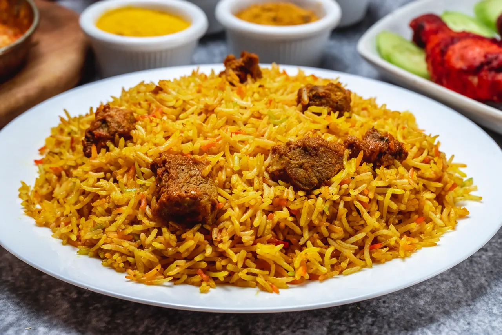

Pilau is a popular East African rice dish, especially loved in Kenya and Tanzania. It is prepared by cooking rice with aromatic spices such as cumin, cardamom, cinnamon, cloves, and black pepper, which give it a rich fragrance and distinctive taste. The rice is usually cooked with beef, chicken, or goat meat, along with onions, garlic, ginger, and sometimes tomatoes. The combination of spices and meat broth gives pilau its characteristic brown colour and delicious flavour.
Pilau is commonly served during celebrations, weddings, family gatherings, and special occasions, although many people also enjoy it as an everyday meal. In Kenya, it is often accompanied by kachumbari, a fresh salad made with tomatoes, onions, coriander, and lemon juice. The dish is appreciated for its satisfying taste, appealing aroma, and cultural significance, bringing people together to share a delicious and memorable meal.